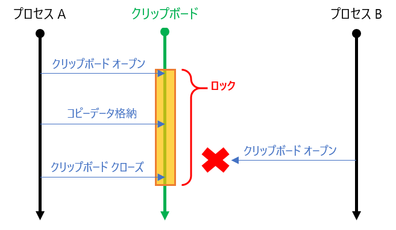
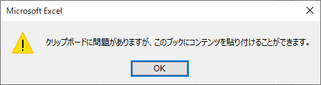

こんにちは、Office サポート チームの中村です。
Office アプリケーション上でコピーや貼り付け操作を行ったときに、コピーしたはずのデータが貼り付けられなかったり、エラーが発生することがあります。これは、他のアプリケーションとのクリップボードへのアクセスが競合したことが原因である場合が非常に多いものとなります。このような原因でコピー・貼り付けに失敗する場合、基本的には再度コピーや貼り付けを行うしかありません。
弊社サポートへのお問い合わせの中で、このような状況が避けられないことに疑問を持つ声を時折頂いていますので、今回の記事では、この仕組みを解説します。
1. Windows のコピー・貼り付けの仕組み
Windows 上では、例えば Office / インターネット ブラウザ / メモ帳など、異なるアプリケーション間でデータをコピーして貼り付けることができます。このような操作が実現できるのは、OS の「クリップボード」がコピーデータを仲介しているためです。アプリケーション上でデータをコピーすると、クリップボードにコピーしたデータを格納します。また、別のアプリケーションで貼り付けを行うときには、クリップボードからコピーしたデータを取り出します。
このクリップボードを介したコピー・貼り付けの仕組みにおいては、データの整合性を担保することが重要です。例えば、コピーしたデータをクリップボードに格納している途中で他のアプリケーションがこのデータを読み取ると、中途半端な状態のコピーデータが読み取られる危険があります。また、同時に複数のプロセスが異なるコピーデータをクリップボードに書きこむと、データが破損する懸念があります。このような問題を避けるため、クリップボードに複数のアプリケーションから同時にアクセスができないよう、あるアプリケーションからクリップボードにアクセスしている最中は、クリップボードをロックする仕組みとなっています。

このようにクリップボードがロックされている間に他のプロセスがクリップボードをオープンすると、そのアクセスは失敗します。つまり、コピーしたデータが格納できなかったり、貼り付けたいデータが取得できず何も貼り付けられなかったり、といった状況となります。アプリケーションによっては、クリップボードのオープン失敗を検知してエラーメッセージを表示することもあります。このような状況を、「クリップボード アクセスの競合」と呼んでいます。

上記の図におけるプロセス B からは、自身がコピーなどのためにクリップボードにアクセスするとき、クリップボードがロックされているか、通常確認を行うことはありませんし、仮に確認しても強制的にロックを解除することはできません。このため、上図のようにタイミングによってはクリップボードにアクセスできない場合があることは Windows のクリップボードを介したコピー・貼り付けの仕組み上、避けることはできません。Office がプロセス B の立場になった場合も同様ですので、Office 上でのコピー・貼り付けにおいてもこの仕組みの制約を受けることになります。
2. 問題に直面するシナリオ
ユーザー操作によるコピーと貼り付けでのみクリップボードが使われる場合、この流れはシリアルに行われますので、競合が発生することはありません。しかし、実際の Windows 上では、様々な目的でユーザーが意識していないタイミングでクリップボードへのアクセスが行われることがあります。以下に、その例を記載します。
・Windows 10 のクリップボード履歴機能
Windows 10 バージョン 1807 から追加された新機能で、コピーしたデータの過去複数件の履歴を保持して貼り付けられるようになりました。この機能の実現のため、クリップボードにデータが格納されると、クリップボード履歴機能のプロセスからクリップボードにアクセスが発生します。
参考)クリップボードの概要
https://support.microsoft.com/ja-jp/windows/30375039-ce71-9fe4-5b30-21b7aab6b13f
・エクスプローラの [貼り付け] ボタン
エクスプローラのリボンに [貼り付け] ボタンがあります。コピーデータがファイルなどのエクスプローラ上で貼り付けられるデータの場合に、このリボンのボタンを活性化するため、リボンが展開表示されている場合は、コピー時にエクスプローラからもアクセスが発生します。(リボンを閉じた状態で OS を再起動してそのままリボンを開かなければ、このアクセスは発生しません。)
・リモート デスクトップのクリップボード共有
リモート デスクトップ時に、[ローカル リソース] タブで [クリップボード] のチェックを有効にすると、ローカルとリモートのマシン間でデータをコピーすることができます。この機能が有効な状態でリモート接続している場合、これを管理するプロセス (rdpclip.exe) からクリップボードにアクセスが発生します。
・他の Office アプリケーション
Office アプリケーション間では、Word と Excel など、別の Office アプリケーション同士でコピー・貼り付けを行う独自の仕組み (Office クリップボード) があります。この機能は、OS にクリップボード履歴機能が搭載される以前から、コピーデータの履歴を利用できる機能を提供していました。この機能実現のため、いずれかの Office アプリケーションでコピーが行われると、起動している他の Office アプリケーションからクリップボードにアクセスが発生します。
なお、この機能については以下のレジストリを設定することで無効化できます。Office クリップボードを無効化しても、通常の OS としてのコピー・貼り付け機能の範囲でコピー操作を利用できます。
<Office クリップボードの無効化>
キー : HKEY_CURRENT_USER\Software\Microsoft\Office\16.0\Common\General
名前: AcbControl
種類: REG_DWORD
値 : 2147483648 (10 進)
※ Microsoft 365 / Office 2019 / Office 2016 向けのレジストリ キーです。
※ すべての Office アプリケーションを終了した状態で設定してください。
・サードパーティ製品 (主にクリップボード監視機能、セキュア接続機能などを提供する製品)
サードパーティ ソフトでも、クリップボードへのアクセスが行われることがあります。
例えばセキュリティ ソフトなどには、ユーザーによるデータの持ち出しを監視するため、クリップボード監視機能がついているものがあります。このような製品の多くでは、クリップボード監視機能によって、データのコピー・貼り付けなどに連動してクリップボードにアクセスが発生します。
また、Windows のリモート デスクトップに似た、独自のセキュア接続としてリモート マシンに接続するソフトでも、クリップボード共有のためアクセスが発生することがあります。
このように、様々なプロセスからクリップボードへのアクセスは発生しますが、ほとんどの場合、実際にはクリップボードがロックされるのは非常に短い時間であるため、実際に競合が生じることは一般的な環境やユーザー操作シナリオではそれほど多くはありません。
ただ、クリップボード アクセスの競合は、クリップボードがロックされている時間が長いほど発生しやすくなります。ロック時間の長さは、コピーデータのサイズやアプリケーションの処理の流れによって異なります。また当然、クリップボード アクセスを行うプロセスが多いほど競合の可能性は高くなるため、様々な製品を導入された環境や、多数のアプリケーションを起動していると比較的発生しやすくなります。そして、プログラムからループ処理で短い時間で繰り返しコピーや貼り付けを行うときは競合の可能性が高くなります。
これらの要素に該当する環境や利用状況では、実際にある程度高い頻度で競合が発生することがある、という報告は弊社サポートにも寄せられています。
3. 対応方法
1. でご説明した通り、仕組み上、クリップボードへのアクセス競合を完全に防ぐことはできません。このため、Office アプリケーションで競合によるコピー・貼り付けの失敗が生じる状況では、競合相手のプロセスを停止 (クリップボードにアクセスする機能を無効化) して解消するか、ユーザーが再度コピーや貼り付けを行う運用対処しかありません。
クリップボードへのアクセスが失敗した場合の Office の動作は、アプリケーションによって異なります。
Excel
コピー時にクリップボードへのアクセスに失敗すると以下のようなメッセージが表示され、このときにも、その Excel プロセス内ではデータの貼り付けが可能です。(他のアプリケーションには貼り付けられません。)

貼り付け時のクリップボード アクセス失敗の場合は、クリップボードからデータを取得できないため貼り付けられません。この時は、特にエラーメッセージは表示されません。
Word / PowerPoint
コピー、貼り付け共に特にエラーメッセージは表示されず、自アプリケーション内でも貼り付けはできません。
マクロ等からのコピー処理で発生する場合の対処
VBA マクロやその他言語で Office をオートメーションしていて、その処理の中でコピー・貼り付けを行うときに現象が発生する場合は、コピー・貼り付けではなく、別の方法でデータの転記を行うよう変更して回避することをお勧めします。
例えば、Excel でセルをコピーして別のシートに貼り付けるような場合は、コピー元のセル オブジェクトの Valueなどを貼り付け先のセルに設定するよう変更し、Copy や Paste といったメソッドは使用しないことが検討できます。
例: B1 セルの内容を A1 セルへクリップボードを経由して貼り付けるコードの変更イメージ
変更前:
1 | ActiveSheet.Range("B1").Copy |
変更後:
1 | ActiveSheet.Range("A1").Value = ActiveSheet.Range("B1").Value |
今回の投稿は以上です。
本情報の内容 (添付文書、リンク先などを含む) は、作成日時点でのものであり、予告なく変更される場合があります。